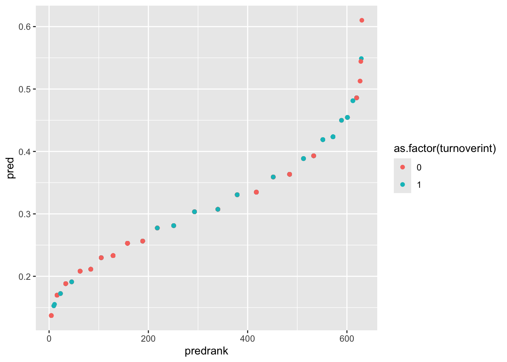

In this lesson we will predict the binary outcome employee turnover intention (0 = intend to stay, 1 = intend to leave).
The goal of a logistic model is to rank individuals according to their risk of the outcome occurring. If the model works well:
Individuals where turnover actually occurred (1) should receive higher predicted log-odds and probabilities.
Individuals where turnover did not occur (0) should receive lower predicted log-odds and probabilities.
A poor performing model is one in which our predictors cannot discriminate between employees who are or are not considering quitting. We want to be able to appropriately sort individuals by predicting their group membership, so we know which individual is higher in “risk.” “Risk” is a specific term in statistics, which is just the probability of an event occurring. A bad model cannot accurately predict the individual’s risk.
The Dataset
The dataset comes from a company that had their employees fill out a “climate survey”, where each employee gave feedback on variables related to satisfaction to their workplace. The variables we will focus on in this lesson are
turnoverint — binary indicator of whether or not the employee intends to leave their job (0 = intend to stay, 1 = intend to leave)
male — binary indicator of an employee’s gender (0 = female, 1 = male)
lmx — measure of how well the employee perceives their interactions with their team leader (0–20 scale)
jobsat — a measure of the employee’s satisfaction at their job (1–7 scale)
The focal model we are interested in is whether an employee’s intention to leave their job (turnoverint) can be predicted by their gender (male) and how well they perceive their relationship with the team leader (lmx).
1. Fitting a Logistic Regression Model
Fit Logistic Regression with glm()
In base R, the lm() function cannot perform logistic regression. Instead we use glm() (generalized linear models). glm() can estimate many model types. The argument family = "binomial" specifies that we want a logistic model. Recall that we are predicting the probability of a binary outcome, which is represented with a binomial function.
model1 <-glm(turnoverint ~ male + lmx,data = employee,family ="binomial") # binomial family = logistic regressionsummary(model1)
Call:
glm(formula = turnoverint ~ male + lmx, family = "binomial",
data = employee)
Coefficients:
Estimate Std. Error z value Pr(>|z|)
(Intercept) 0.44794 0.29615 1.513 0.13
male -0.14474 0.17575 -0.824 0.41
lmx -0.12605 0.03003 -4.197 2.7e-05 ***
---
Signif. codes: 0 '***' 0.001 '**' 0.01 '*' 0.05 '.' 0.1 ' ' 1
(Dispersion parameter for binomial family taken to be 1)
Null deviance: 779.59 on 629 degrees of freedom
Residual deviance: 759.94 on 627 degrees of freedom
AIC: 765.94
Number of Fisher Scoring iterations: 4
The output looks similar to a linear regression summary, but several parts are different.
Coefficient tests - the coefficient tests in logistic regression are Wald tests, which use a Z statistic instead of the t statistic used in ordinary least squares (OLS) regression. If you report these results, be sure to refer to them as Wald tests.
Deviance - logistic models do not have a traditional \(R^2\). Instead, the output reports deviance values for both the null model and the fitted model. The null deviance is the deviance of a model with no predictors. The residual deviance is the deviance of the model we specified, and is equal to -2 log-likelihood (-2LL). These deviance values will later be used to calculate a pseudo-\(R^2\) and to conduct a likelihood ratio test.
AIC (Akaike Information Criterion) is used to compare competing models. Lower AIC values generally indicate a better-fitting model. But we won’t be using these for this class.
Fisher Scoring Iterations tells us how many steps were needed for the algorithm to estimate the model. Logistic regression does not use the OLS estimation procedure used in standard linear regression. This output just helps diagnosing issues with model estimation.
2. Coefficient Interpretations, Odds Ratios, and Probabilities
Interpreting the Log-Odds Coefficients
By default, logistic regression coefficients are reported in log-odds units. All rules of interpretations still apply to log-odds (see the Multiple Linear Regression lesson).
Binary predictor (male: 0 = female, 1 = male): Holding leader-member exchange constant, males are expected to differ from females by -.144 in the log-odds of turnover intention = 1. Because the coefficient is negative here, males have lower log-odds than females.
Continuous predictor (lmx): Between two females that differ in one unit of leader-member exchange, the log-odds of the outcome is expected to be .12 less for the female with higher leader-member exchange
Intercept: When all predictors equal 0, the intercept gives the predicted log-odds of turnover intention = 1. In this example, that is the predicted log-odds for females with LMX = 0.
The problem with log-odds is that they are not very intuitive in practice. For that reason, we often convert them into odds ratios or probabilities.
Calculating and Interpreting Odds Ratios
We can convert log-odds coefficients into odds ratios by exponentiating them with exp(). Odds ratios tell us the multiplicative change in the odds of turnoverint = 1 relative toturnoverint = 0.
Interpretation rule:
Values greater than 1 indicate higher odds of turnoverint = 1.
Values less than 1 indicate lower odds of turnoverint = 1.
Because this is a ratio, the interpretation is always with respect to the outcome in the numerator.
exp(model1$coef)
(Intercept) male lmx
1.5650822 0.8652440 0.8815739
Binary predictor: Holding leader-member exchange constant, males are predicted to have .86 times the odds that the employee intends to leave, which means their odds are predicted to be about 14% lower than females.
Continuous predictor: For two females who differ in an leader-member exchange value of 1, the individual with the larger leader-member exchange score is predicted to be .88 times lower in odds that the employee intends to leave than the other female, which means they are predicted to be about 12% lower in odds.
Intercept: Exponentiating the intercept gives the baseline odds of employee intends to leave when all predictors equal 0. For example, if exp(b0) = 1.57, then the baseline odds are 1.57 to 1. This is why the odds ratio of the intercept is usually not interpreted much in practice.
Odds Ratios in the Opposite Direction
If you want to interpret the odds ratio in the opposite direction (e.g., comparing males to females instead of females to males), you can take the inverse of the odds ratio.
1/0.86
[1] 1.162791
# Equals 1.162791
For a male and female with equal leader-member exchange scores, being male increases the odds of that the employee intends to leave by a factor of 1.16 compared to being female. In other words, the odds are about 16% higher. Reversing the odds ratio does not change the p value. The confidence interval conveys the same information as well, although its endpoints will be inverted.
Odds Ratio Confidence Intervals
Significance tests for odds ratios follow the same results as the log-odds coefficients. However, if you want confidence intervals for the odds ratios, you can exponentiate the confidence intervals from the log-odds model.
For odds ratios, statistical significance is evaluated against 1 (not 0, as in linear regression). If the confidence interval contains 1, the effect is not statistically significant. In this example, only LMX has a confidence interval that does not contain 1, indicating it is statistically significant.
Probabilities
Sometimes, it might be preferable to give concrete probabilities rather than more abstract odds. You can convert predicted log-odds into probabilities manually. To do this, plug specific predictor values into the logistic regression equation to get the predicted log-odds (sometimes called eta), then convert eta to a probability.
In other words:
Compute the predicted log-odds
Convert the log-odds to probability with: \(p = 1 / (1 + e^{-\eta})\)
Example 1: What is the predicted probability that a male with LMX = 0 has turnoverint = 1?
So there is about a .51 predicted probability that a female with LMX = 3 has turnoverint = 1.
If you do not want to convert these manually, you can use the ilogit() function from the mosaicCore package. ilogit() converts log-odds to probabilities.
ilogit(eta1)
(Intercept)
0.5752233
ilogit(eta2)
(Intercept)
0.5174427
Alternatively, if you want to convert probabilities back to log-odds, you can use the logit() function from mosaicCore. These values should match the respective eta values above.
logit(p1)
(Intercept)
0.3031947
logit(p2)
(Intercept)
0.06979917
3. Pseudo-\(R^2\)
Pseudo-\(R^2\)
Logistic models do not have residuals in the same way OLS regression does, so the usual \(R^2\) is not available. Instead, we use pseudo-\(R^2\) measures. Pseudo-\(R^2\) measures quantify how much the model improves prediction relative to a null model (a model with only an intercept and no predictors). In other words, they measure how much better our model fits the data compared to a model that assumes the same probability for every observation.
Some pseudo-\(R^2\) measures are scaled so that their values roughly resemble the 0–1 interpretation of \(R^2\) in linear regression. Examples include Cox-Snell and Nagelkerke pseudo-\(R^2\).
However, the McFadden pseudo-\(R^2\) is often considered the most “honest” because it does not attempt to mimic the variance-explained interpretation of OLS \(R^2\). Instead, it directly measures the proportional improvement in model likelihood relative to the null model. Larger pseudo-\(R^2\) values indicate that the predictors help the model predict the outcome better than the null model (i.e., assuming no variables can predict the outcome). This is often what is desired from the pseudo-\(R^2\), so the McFadden statistic will suffice and we will focus on it for the class.
Calculating Pseudo-\(R^2\) in Base R
dev.null <- model1$null.deviance # deviance of the null modeldev.proposed <- model1$deviance # deviance of the fitted model(dev.null - dev.proposed) / dev.null # Calculated McFadden pseudo-R^2
[1] 0.02520202
Interpretation is broadly similar to \(R^2\) in linear regression. For example, if this value is about .02, then the predictors are estimated to explain about 2% of the variation in employee turnover intention. However, keep in mind that this is a pseudo-\(R^2\), so it should not be treated as exactly the same thing as the usual OLS \(R^2\).
4. Likelihood Ratio Test
Likelihood Ratio Tests
The likelihood ratio test (LRT) is a model comparison test. By default, it compares your fitted model to the null model (a model with only an intercept and no predictors). Conceptually, this asks: does the model with predictors fit significantly better than the null model? This is similar to the overall model F test in linear regression.
You can also use an LRT to compare two nested models. “Nested” means that one model is just a reduced version of the other, with a subset of the predictors. This is similar to a \(\Delta R^2\) test in linear regression.
Calculating Likelihood Ratio Tests with Deviance Values
One way to do this in base R is to work with deviance values. Deviance is equal to -2 log-likelihood (-2LL), so differences in deviance can be used to compute the likelihood ratio test. The test statistic is the difference in deviance values and follows a chi-square distribution.
dev.null <- model1$null.deviance # deviance of the null modeldev.proposed <- model1$deviance # deviance of the fitted model1-pchisq(dev.null - dev.proposed, # Difference of deviancesdf =length(model1$coefficients) -1) # df = # of coefficients - 1
[1] 5.415987e-05
The output is the p value for the overall model test. If p < .05, the fitted model predicts the outcome significantly better than the null model. So since our value is significant, our model predicts significantly better than the empty null model.
Calculating Likelihood Ratio Tests with R Functions
Another approach is to fit the null model directly and compare the two models.
model0 <-glm(turnoverint ~1, # intercept-only model (denoted with ~ 1)data = employee,family = binomial)# Use anova() to calculate LRT between fitted model 1 and null model 0.# Make sure test = "Chisq" is specified. The "Deviance" is the LRT test statistic.anova(model0, model1, test ="Chisq")
Analysis of Deviance Table
Model 1: turnoverint ~ 1
Model 2: turnoverint ~ male + lmx
Resid. Df Resid. Dev Df Deviance Pr(>Chi)
1 629 779.59
2 627 759.94 2 19.647 5.416e-05 ***
---
Signif. codes: 0 '***' 0.001 '**' 0.01 '*' 0.05 '.' 0.1 ' ' 1
# You can also use lrtest() from the lmtest package.lrtest(model0, model1)
Likelihood ratio test
Model 1: turnoverint ~ 1
Model 2: turnoverint ~ male + lmx
#Df LogLik Df Chisq Pr(>Chisq)
1 1 -389.79
2 3 -379.97 2 19.647 5.416e-05 ***
---
Signif. codes: 0 '***' 0.001 '**' 0.01 '*' 0.05 '.' 0.1 ' ' 1
Comparing Nested Predictor Sets with R Functions
If you want to compare predictor sets, fit two nested models and then compare them with an LRT. This method is akin to a \(\Delta R^2\) test of regular OLS regression.
model2 <-glm(turnoverint ~ jobsat, # model with job satisfaction onlydata = employee,family = binomial)summary(model2)
Call:
glm(formula = turnoverint ~ jobsat, family = binomial, data = employee)
Coefficients:
Estimate Std. Error z value Pr(>|z|)
(Intercept) 1.45422 0.31047 4.684 2.81e-06 ***
jobsat -0.58999 0.08063 -7.317 2.53e-13 ***
---
Signif. codes: 0 '***' 0.001 '**' 0.01 '*' 0.05 '.' 0.1 ' ' 1
(Dispersion parameter for binomial family taken to be 1)
Null deviance: 779.59 on 629 degrees of freedom
Residual deviance: 717.04 on 628 degrees of freedom
AIC: 721.04
Number of Fisher Scoring iterations: 4
model3 <-glm(turnoverint ~ male + lmx + jobsat, # add male and lmxdata = employee,family = binomial)summary(model3)
Call:
glm(formula = turnoverint ~ male + lmx + jobsat, family = binomial,
data = employee)
Coefficients:
Estimate Std. Error z value Pr(>|z|)
(Intercept) 1.690165 0.367305 4.602 4.19e-06 ***
male -0.006413 0.183369 -0.035 0.972
lmx -0.041694 0.033366 -1.250 0.211
jobsat -0.548865 0.087147 -6.298 3.01e-10 ***
---
Signif. codes: 0 '***' 0.001 '**' 0.01 '*' 0.05 '.' 0.1 ' ' 1
(Dispersion parameter for binomial family taken to be 1)
Null deviance: 779.59 on 629 degrees of freedom
Residual deviance: 715.47 on 626 degrees of freedom
AIC: 723.47
Number of Fisher Scoring iterations: 4
# To run the LRT, compare the two models.# Make sure one model is nested within the other (Model 2 is nested in Model 3).anova(model2, model3, test ="Chisq")
Analysis of Deviance Table
Model 1: turnoverint ~ jobsat
Model 2: turnoverint ~ male + lmx + jobsat
Resid. Df Resid. Dev Df Deviance Pr(>Chi)
1 628 717.04
2 626 715.47 2 1.5688 0.4564
If this test is not significant, then adding male and lmx does not improve prediction beyond the model that already contains jobsat. In other words, male and lmx are not providing much additional predictive value once job satisfaction is already in the model. This matches the model summaries above, where jobsat is significant but male and lmx are not. In this dataset, job satisfaction is a much stronger predictor of turnover intention than gender or leader-member exchange.
5. Plotting Logistic Regression
Plotting Log-Odds and Probabilities
Since the outcome variable is binary and logistic models do not produce traditional residuals, we are somewhat limited in the usual regression plots. However, we can still visualize how well the model separates the two outcome groups using predicted values.
Computing and Ranking Probabilities
First compute the predicted probabilities of turnover for each individual, then rank individuals based on the size of their predicted probability. rank() assigns each individual a rank from the lowest predicted probability of turnover to the highest.
If individual 1 has a rank of 158, this means they have the 158th lowest predicted probability of turnover in the dataset.
If you see a decimal rank (e.g., 417.5), it means that observation is tied with another individual who has the same predicted probability.
employee$pred <-predict(model1, type ="response")employee$predrank <-rank(employee$pred)
Plot Predicted Probabilities
gf_point(pred ~ predrank, data = employee,color =~as.factor(turnoverint))

This plot allows you to visually inspect how well the model separates the two turnover groups. The X-axis is the rank of individuals based on predicted probability. The Y-axis is the predicted probability of turnover. The color is the actual observed outcome (0 = intend to stay, 1 = intend to leave).
Interpreting the Plot
Ideally we would like to see individuals with turnoverint = 1 appearing mostly on the right side of the plot (higher predicted probabilities), while individuals with turnoverint = 0 appear mostly on the left side. If this pattern occurs, it means the model is effectively ranking higher-risk individuals above lower-risk individuals.
In this example, the model does push some higher-risk employees toward the right side of the plot, but the separation between employees with and without turnover intention is modest.
Model Goals from Plots
Look back at the beginning of the lesson where the goals of logistic regression were discussed. Recall that the goal of a logistic model is to rank individuals according to their risk of the outcome occurring (probability of turnoverint = 1). If the model works well, individuals that actually turned over (1) should receive higher predicted probabilities, and individuals that actually did not turn over (0) should receive lower predicted probabilities.
Thus our plot should show all the turnoverint = 1 dots on the right, since that would mean they have a higher predicted probability. We want them to have a higher predicted probability, since we KNOW that they are in turnoverint = 1.
Since our model isn’t the best at doing that (it only slightly discriminates for turnoverint = 1), we can’t say our model is well performing. This matches up with what we’ve seen from the model summary, in which the coefficients weren’t very effective at predicting the outcome (pseudo-\(R^2\) of .02).
Well Done!
You have completed the Logistic Regression tutorial. Here is a summary of what was covered:
Fitting logistic regression with glm() using family = "binomial" and interpreting the output
Interpreting log-odds coefficients, odds ratios, and converting to probabilities with ilogit()
Computing odds ratio confidence intervals and evaluating significance against 1
Computing McFadden’s pseudo-\(R^2\) as a measure of model fit
Testing model significance using the likelihood ratio test with anova() and lrtest()
Visualizing predicted probabilities to assess model discrimination
The next lesson covers multicategorical predictors.